帛冠纺织 · 第一阶段交付
基于数十家国际面料品牌成品PDF的逐页分析，为帛冠确认AI产品卡的输出形态、内容结构和风格方向。
定位
现有工具要么懂面料但不会讲故事（湛蓝科技、Style3D），要么会讲故事但不懂面料（Gamma、WPS AI）。帛冠要做的是一个面料价值转译系统——把参数变成客户能理解的语言，把技术变成销售能复述的故事。
核心判断：市场上没有一个工具能同时覆盖"纺织专业知识 + 故事型文案 + 视觉方向 + 销售动作指引"。
案例拆解
以下四个案例代表了四种截然不同的产品表达策略，从中可以清晰看到市场方向。
瑞士VFM Design是一家中等规模的装饰面料企业，产品定位在商用空间（酒店、办公）。TUNDRA是他们2025年的新系列，13页的册子里藏着一套非常成熟的产品表达逻辑。
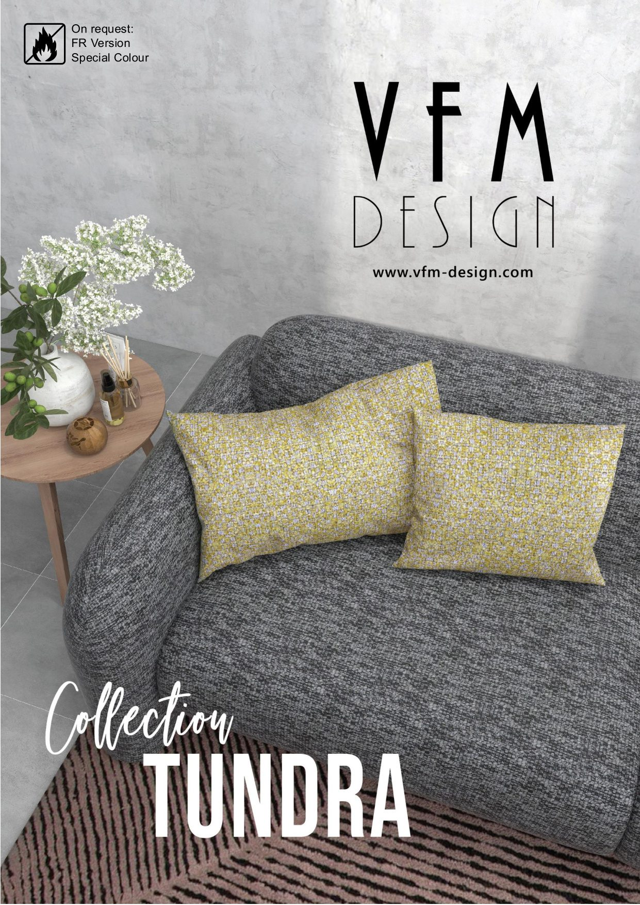
封面策略
不是面料特写，而是面料在真实场景中的效果。客户第一眼看到的是"这块布用在沙发上是什么感觉"。
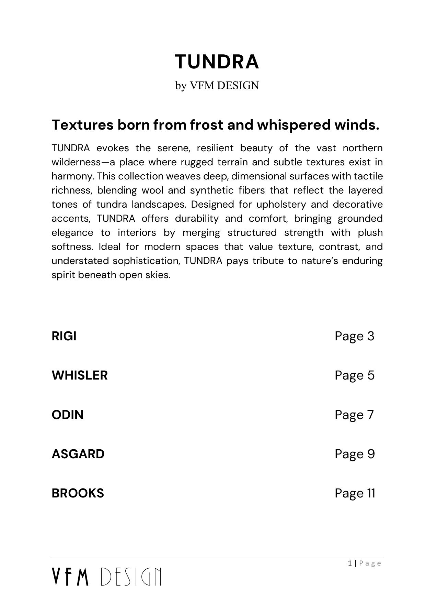
系列叙事
"Textures born from frost and whispered winds." 用北欧冻原的意象统领整个系列，但紧接着就是功能定位：durability and comfort。
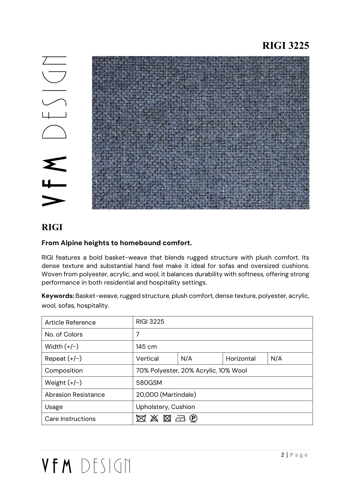
单品产品页
每个子系列固定结构：故事标题 → 一段功能描述 → Keywords标签行 → 参数表（成分/克重/门幅/耐磨/用途/护理）。
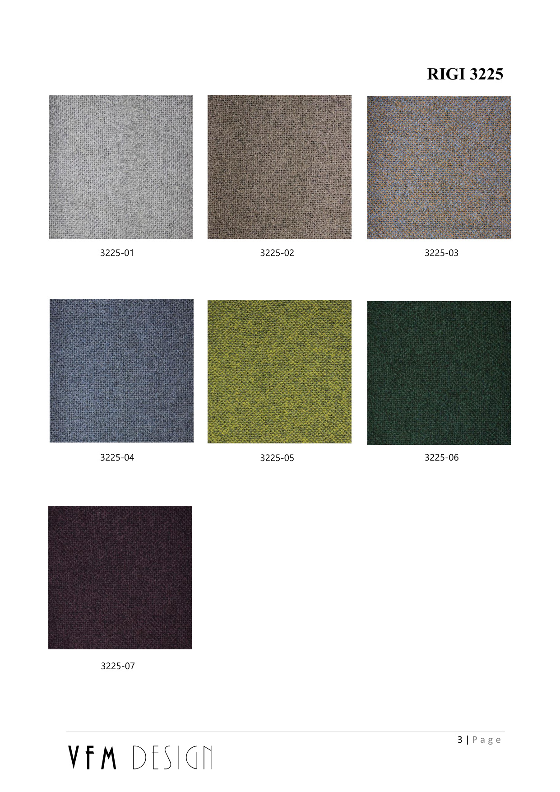
色卡页
每个子系列配一页色卡。网格排列，编号清晰，无多余装饰。这是B2B面料卡的标配元素。
TUNDRA的文案有一个值得注意的手法：每个子系列的标题都是一句"从A到B"的转化叙事。RIGI是"From Alpine heights to homebound comfort"，WHISLER是"A quiet force of structure and stillness"。这不是空洞的诗意——每句话都在暗示面料的核心卖点（RIGI的卖点是"高山般坚韧但家居般舒适"，WHISLER的卖点是"结构感但不生硬"）。
更关键的是参数表的设计。VFM只选了7个字段：编号、色数、门幅、循环、成分、克重、耐磨、用途、护理。没有堆砌所有检测数据，而是只放采购决策必需的信息。这种克制比信息过载更专业。
TUNDRA对帛冠的启示：固定模板 + 可变叙事。结构统一但故事各异——这正是AI生成的理想场景。帛冠的每款面料都可以套用这个"场景封面→系列故事→单品页（故事+参数）→色卡"的四层结构。
Chelsea Textiles是伦敦的高端手工刺绣面料品牌，一米布的价格可能是帛冠产品的50倍。Arcadia系列只有5页，但每一页都在做同一件事：让面料的工艺细节自己说话。
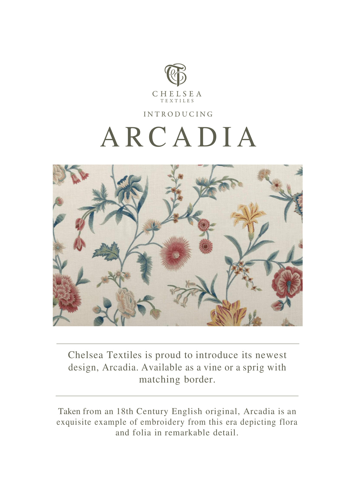
封面
品牌名、"INTRODUCING"、系列名、一句话、一张花纹图。整页信息量不超过30个英文单词。
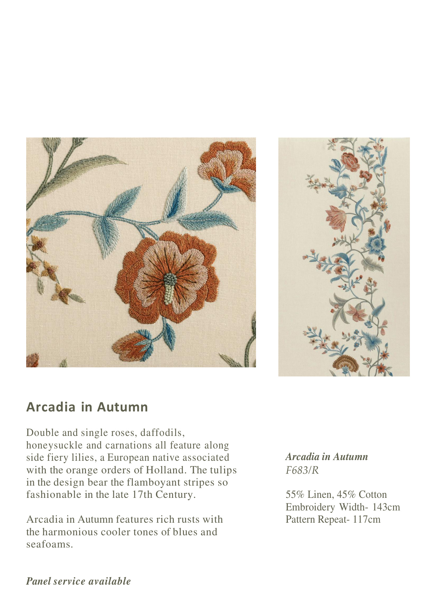
配色叙事
左侧微距细节+全幅效果，右侧历史溯源文案。参数只有4项：成分、工艺、门幅、循环。
Chelsea的文案策略完全不讲功能。"Taken from an 18th Century English original, Arcadia is an exquisite example of embroidery from this era depicting flora and folia in remarkable detail." 它在讲历史、讲工艺传承、讲美学价值。这对Chelsea的客户（室内设计师、高端酒店采购）是有效的——他们买的不是"布"，是"故事"和"品位"。
但这个策略对帛冠不适用。帛冠的客户大概率不会为"18世纪英国刺绣传统"买单。Chelsea的价值在于它展示了一个极端：当产品足够独特时，可以完全放弃功能叙事，只讲美学。所以需要"故事+证据"的双层结构。
Chelsea对帛冠的启示：面料图片的视觉占比应该极高（60%以上）。文字越少，每个字的分量越重。帛冠可以借鉴这个"图片主导"的比例，但必须在有限的文字空间里同时传递故事和参数。
Camira是英国最大的商用面料制造商之一，产品覆盖办公、交通、酒店。他们为每个系列都制作了一张"Storycard"——单页、双面、A4尺寸。。
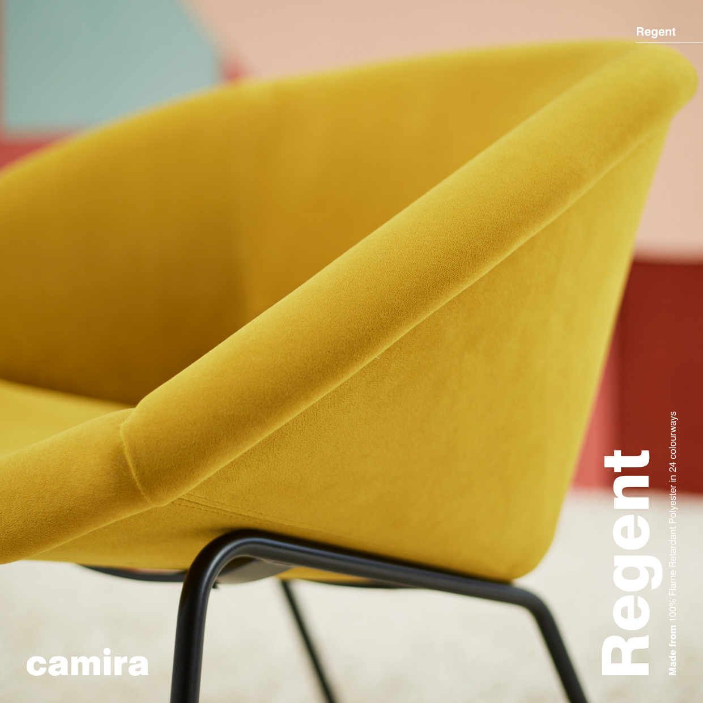
Storycard 正面
从上到下：品牌logo → 系列名 → 应用场景图 → 一段故事文案 → 关键性能指标 → 环保认证标志 → 色卡条。
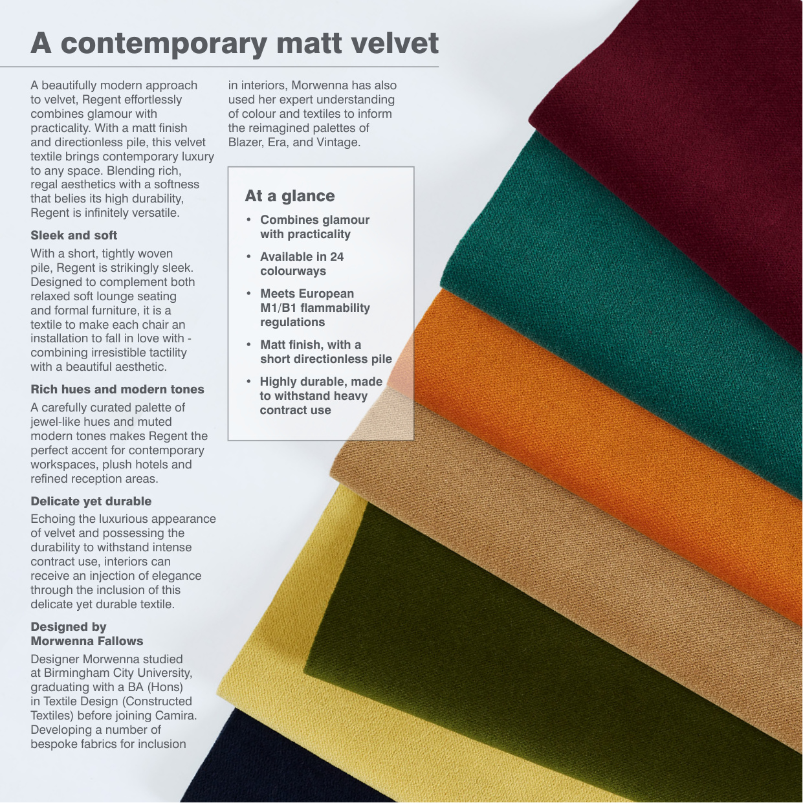
Storycard 背面
完整技术规格 + 可持续发展叙事 + 认证详情。正面讲故事，背面讲事实。
Camira的Storycard之所以是标杆，因为它在一张纸上解决了三个问题：让客户愿意看（场景图+故事）、让客户能判断（性能指标+认证）、让客户能行动（色卡+索样信息）。这三层信息的排列顺序不是随意的——它遵循了"吸引→信任→行动"的说服逻辑。
Camira还有一个帛冠可以直接借鉴的做法：他们为不同系列的Storycard使用完全相同的模板结构，只替换内容。Regent、Rivet、Replay、Blazer——每个系列的卡片结构一模一样，但故事各异。这意味着一旦模板确定，AI只需要生成内容，不需要每次重新设计版式。
Camira对帛冠的启示：这就是帛冠V1应该对标的密度和结构。单页、有故事、有参数、有色卡、有认证——信息完整但不冗余。固定模板+可变内容=AI批量生成的理想形态。
Brintons是英国历史最悠久的地毯制造商之一，Imperfect Opulence是他们与设计师Stacy Garcia合作的酒店系列。这份画册几乎就是一张成熟的海报式企划卡——它不是在展示地毯，而是在构建一个完整的世界观。
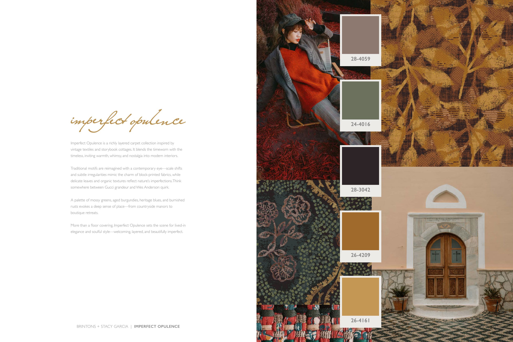
故事页
标题"Imperfect Opulence"。视觉拼贴：人物、建筑、纹样、色卡同页出现。定位在"Gucci grandeur与Wes Anderson quirk之间"。
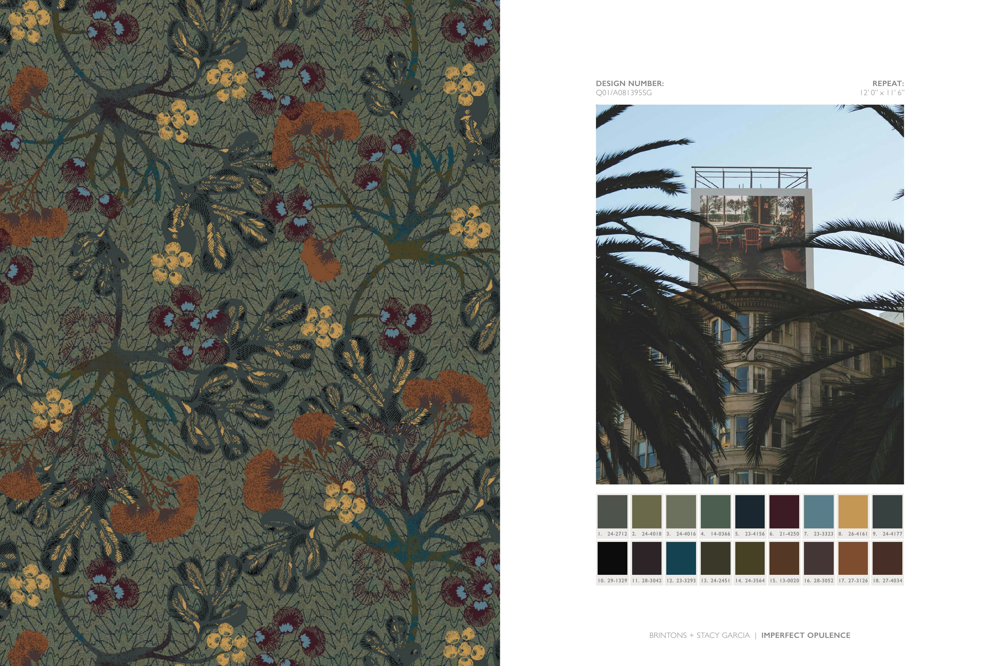
规格承接页
故事页之后立刻进入设计编号、repeat尺寸、色号。前一页讲故事，后一页讲事实——分层但不割裂。
Brintons的页面告诉我们"故事感"到底是什么——不是"写得文艺"，而是把客户带入一个具体的消费或使用场景。它用vintage textiles、storybook cottages、nostalgia这些词构建了一个"复古奢华"的世界，然后用纹样、色卡和空间图证明这个世界可以落地到酒店地面上。
更关键的是它的分层逻辑：故事页负责让客户想要继续看，规格页负责让客户相信可以落地。这两层不是二选一，而是前后承接。帛冠的企划卡也应该遵循这个逻辑——正面讲故事，背面（或底部）给事实。
Brintons对帛冠的启示：故事型企划卡的核心不是"文案写得好"，而是"构建一个客户想进入的世界"。帛冠可以用同样的方法——"梅雨通勤""礼盒打开瞬间""长途差旅衣橱"——每个主题都是一个微型世界，面料是这个世界的材料基础。但要注意：Brintons面向高端酒店项目，视觉留白极大；帛冠V1应该更紧凑、更销售化，让业务员读完知道怎么报价。
无论是VFM的"故事+参数"平衡、Chelsea的"极致克制"、Camira的"单页全信息"、还是Brintons的"海报式世界观"——所有成功的面料产品卡都在做同一件事：用最少的信息量，让客户做出"我要看样品"的决定。
不是让客户当场下单，不是让客户完全理解面料的所有性能——只是让他们愿意索样。这是面料B2B销售的第一步，也是产品卡唯一需要完成的任务。帛冠的AI模型生成的每一张卡片，都应该以"客户看完会不会要样品"作为唯一的评判标准。
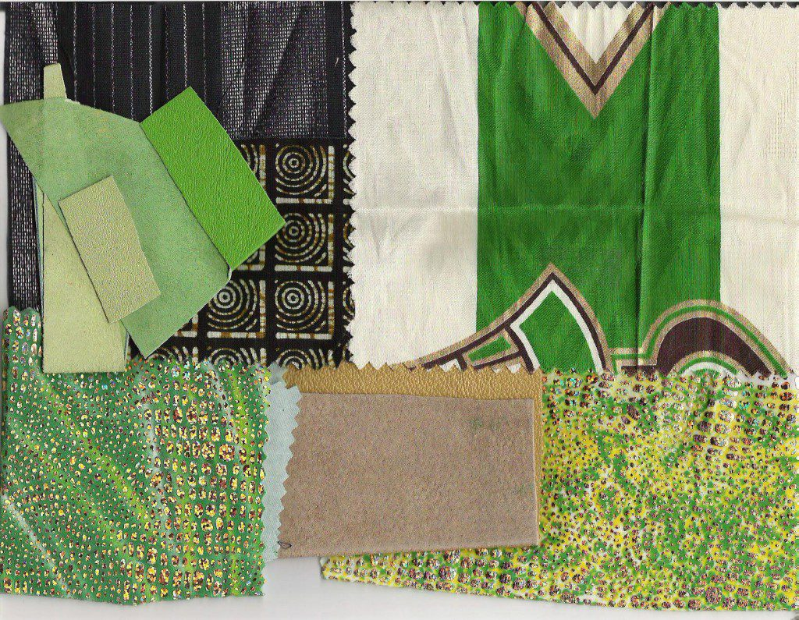
反例：纯面料板
能证明材料存在，但缺故事、缺场景、缺销售动作。只能做"证据区"的素材，不能成为整张卡。
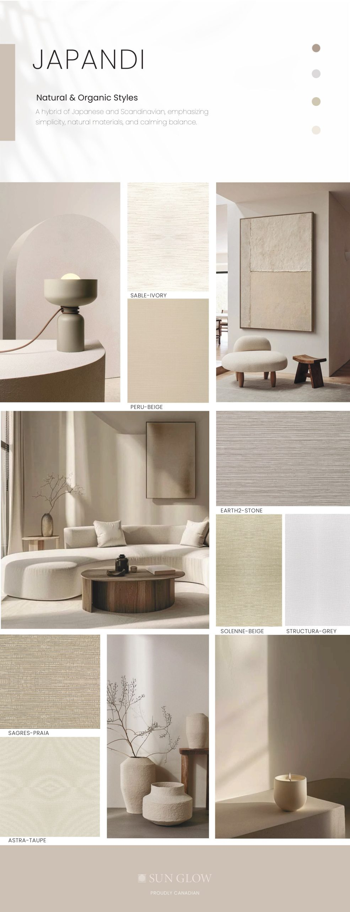
反例：普通Moodboard
有标题、色卡、面料、场景，接近企划卡，但缺三件事：客户产品场景、纺织证据、销售动作。
帛冠的企划卡必须同时满足三个条件才算合格：有故事入口（让客户愿意看）、有材料证据（让客户相信）、有下一步动作（让业务员能推进）。缺任何一个，都只是"好看的图"而不是"能卖货的工具"。